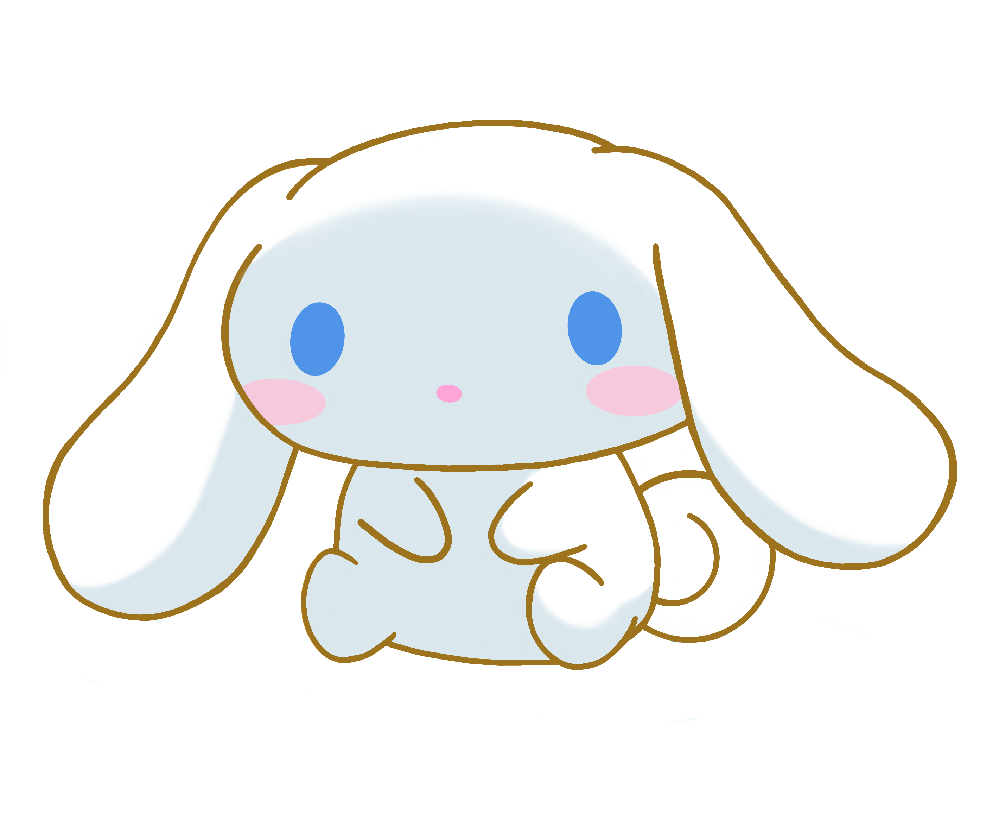

Cinnamoroll is a popular and super-cute character created by Sanrio in 2001. He’s a fluffy white puppy with long, curly ears that resemble cinnamon rolls—hence his name. Cinnamoroll has become one of Sanrio's most beloved characters, thanks to his adorable appearance and sweet personality.
Cinnamoroll has several friends who live with him in Café Cinnamon: